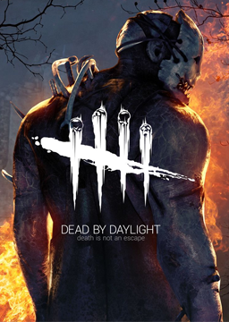
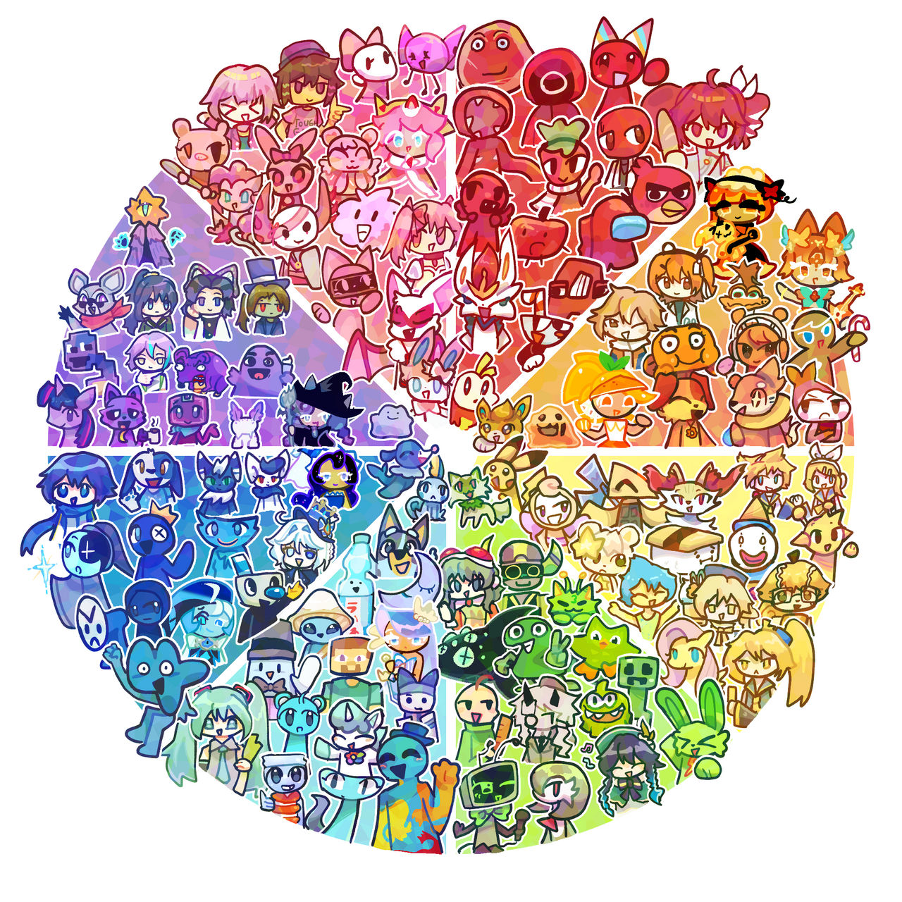
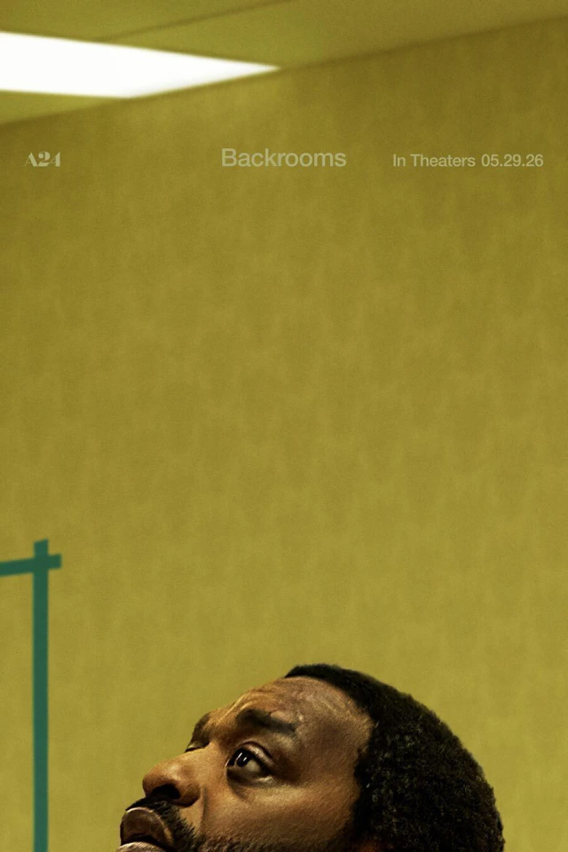
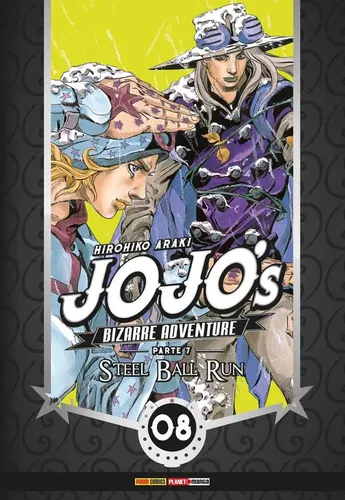
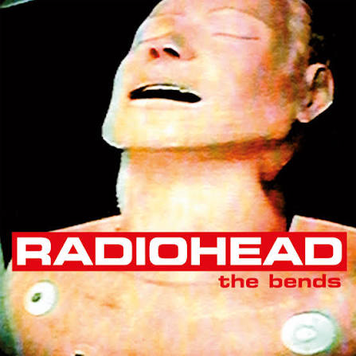

Projeto Mostra STEM: Irrigação Automatizada
Projeto desenvolvido para a Mostra STEM da escola, fazendo reaproveitamentos de materias orgnaicos para ajudar os consumidores e feirantes nas feiras.
Olá meu nome é Dante, tenho 16 anos e sou um jovem o qual possui certas dificuldades para conversar, porém bastante expressivo, gosto de interagir sobre certos topicos, desenhar, jogar e fazer outros afazeres que envolvam temáticas que me atraem
Projeto desenvolvido para a Mostra STEM da escola, fazendo reaproveitamentos de materias orgnaicos para ajudar os consumidores e feirantes nas feiras.

Desenvolvimento de um projeto indie de um jogo com mecanica assimetrica dentro da plataforma do roblox


Sinopse: Baseado no fenómeno viral da internet e na série do YouTube criada por Kane Pixels, a história acompanha um jovem realizador que cai acidentalmente através da realidade para uma dimensão paralela composta por um labirinto infinito de escritórios vazios, luzes fluorescentes zumbindo e carpetes húmidas. Ao tentar encontrar uma saída desse limiar perturbador, ele percebe que o espaço desafia as leis da física e que não está sozinho, precisando de escapar de entidades perigosas enquanto tenta compreender a origem desse não-lugar
Por que gosto: Amo o filme por possuir uma tématica liminal extremamente interessante e que me entretem pelo suspense e a direção feita por Kane persons

Sinopse: Ambientado nos Estados Unidos em 1890, o mangá segue Johnny Joestar, um ex-jóquei prodígio que perdeu o movimento das pernas, e Gyro Zeppeli, um carrasco místico que domina uma técnica antiga conhecida como "Spin". Juntos, eles entram na Steel Ball Run, uma épica e perigosa corrida de cavalos de transição continental que vai de San Diego a Nova Iorque com um prémio de 50 milhões de dólares. Contudo, ao longo do percurso, descobrem que a corrida é uma fachada do próprio Presidente dos EUA para reunir as relíquias sagradas de um corpo misterioso que concede poderes imensos.
Por que gosto: É Jojo né carai

Sinopse/Descrição: Formada na Inglaterra no final dos anos 1980, a Radiohead é uma das bandas de rock alternativo mais influentes e aclamadas do mundo. Famosa pela sua constante evolução e experimentação sonora, a banda começou com o rock tradicional da era grunge nos anos 90 (com sucessos como Creep e o aclamado álbum OK Computer) e revolucionou a música ao incorporar elementos de música eletrónica, jazz, pós-rock e música clássica contemporânea em álbuns históricos como Kid A e In Rainbows. Suas letras abordam frequentemente temas de alienação moderna, ansiedade tecnológica, política e introspeção existencial.
Por que gosto: Eu gosto por conta das letras, entonação das músicas e como eu me indetifico com elas